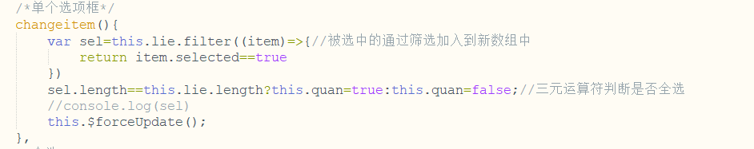
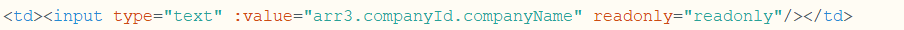

在引用input框的checkbox属性时，选中后会出现数据已经刷新，checkbox选中状态不会改变。这时在事件触发后可以调用this.$forceUpdate()，强制刷新页面解决这个问题。

input框可以加入readonly="readonly"禁止更改

有时下拉框或者单选多选框修改完毕后值不改变，但是其他框里值一改变就像刷新局部了一样，不改变的下拉框就会变动一下，这种情况只要在下拉框上加上@change=“$forceUpdata”就行了；我的是在使用element下拉框时出现的。
<el-select class="jiachang" v-model="form.bankTypeId" clearable placeholder="请选择票据" @change="$forceUpdate()">